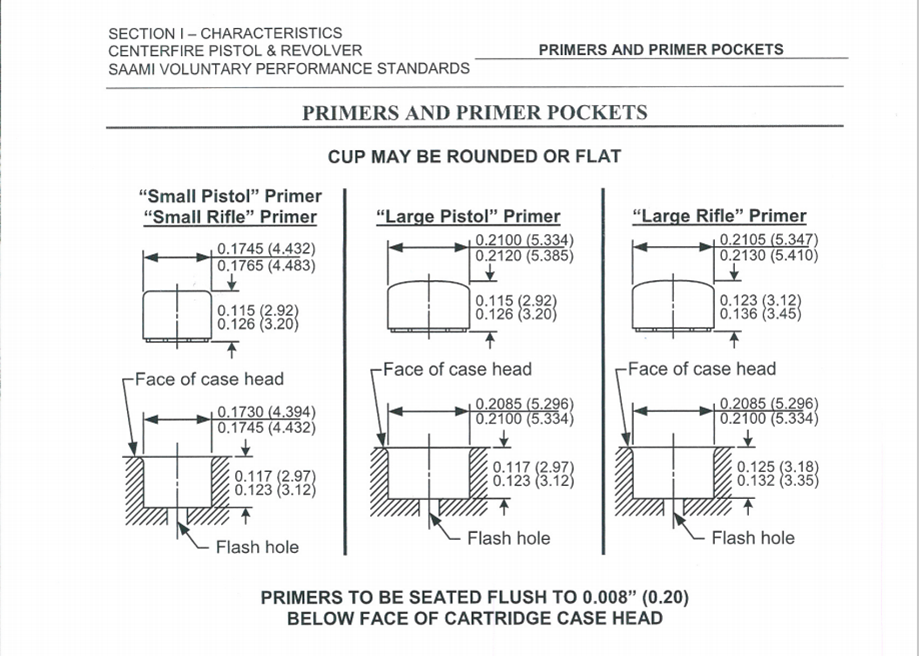

Not all primers are the same. You have rifle and pistol primers, small and large, and magnum. Primers could be any combination of these. For example, small/large rifle, small/large pistol and either could have a magnum tag on it. The difference between rifle and pistol primer is pretty much the thickness of the material. This is to prevent the firing pin to puncture the primer, causing damage to the pin itself. Large and small primer is self-explanatory, the overall diameter of the primer is different. If the primer says magnum, that just means that it has a little more power to help ignite the powder. There was actually a shortage of primers recently due to the pandemic disrupting supply chains and the overall social political climate causing many people to panic buy firearms and ammunition. This in turn caused manufacturers to bump up ammo production sucking up any primers and leaving reloaders, those that make their own ammunition at home, with nothing. This chart is here to inform such people about which primers could be substituted for what. Here is an article with more information on the shortage.
